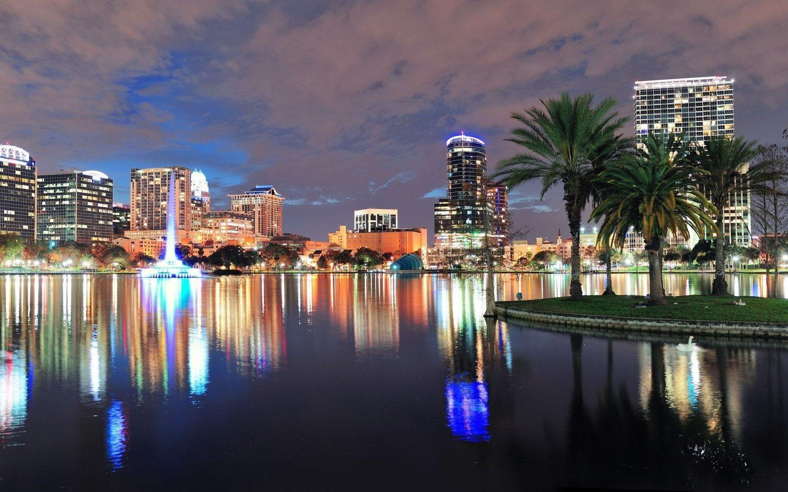
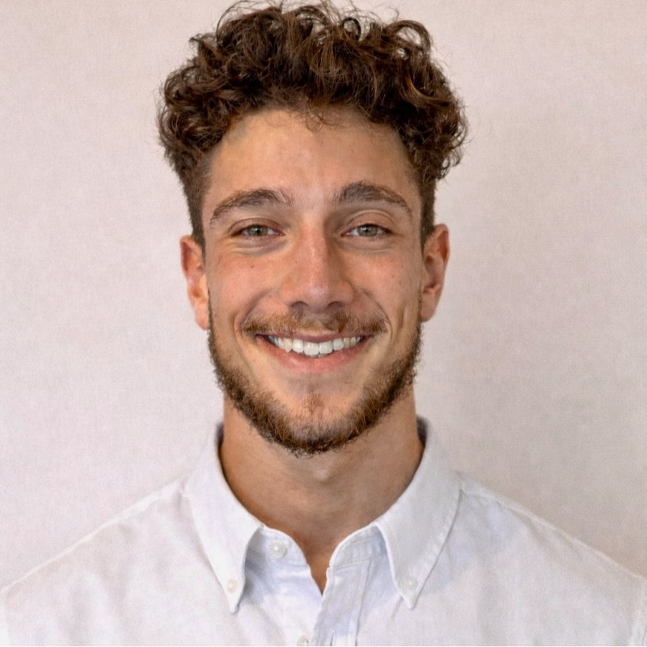
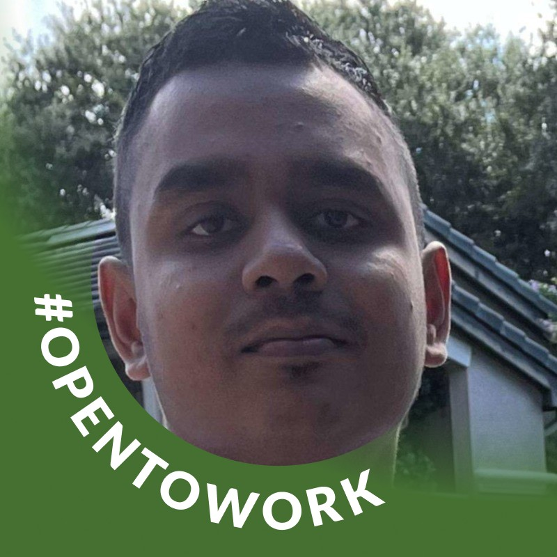
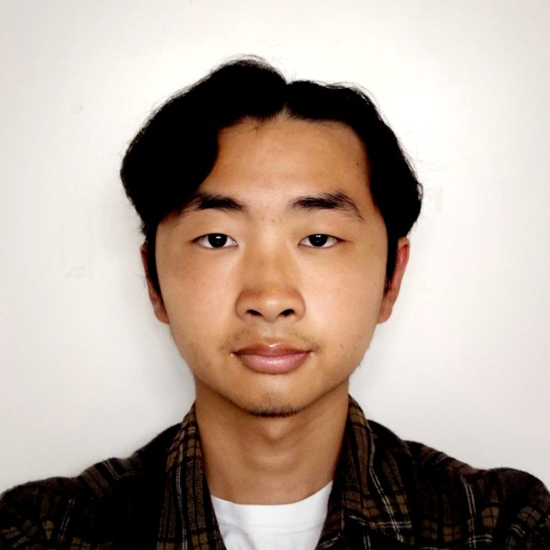
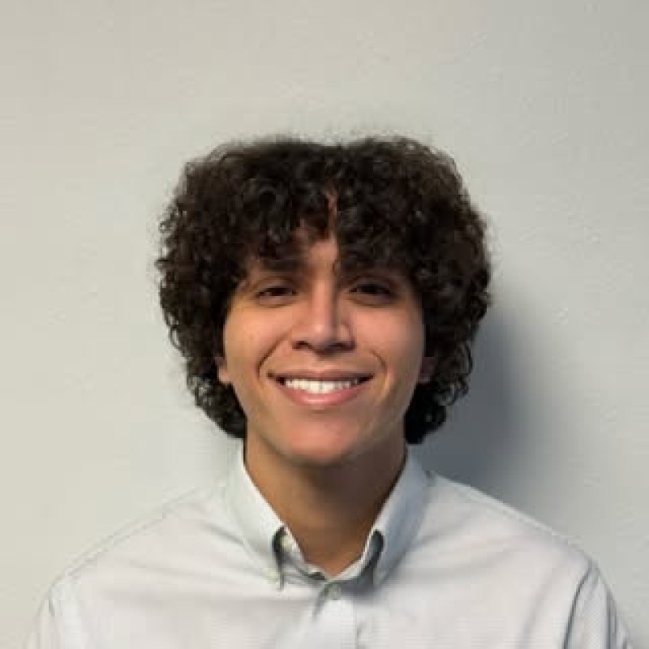
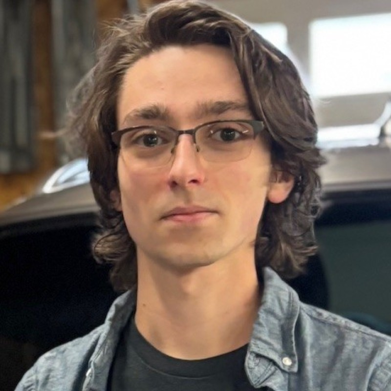
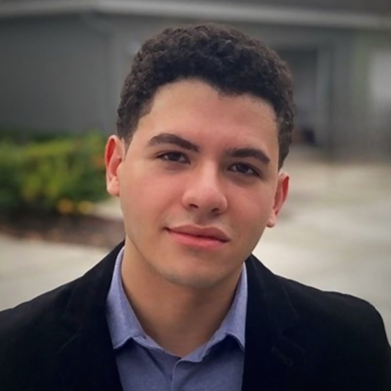
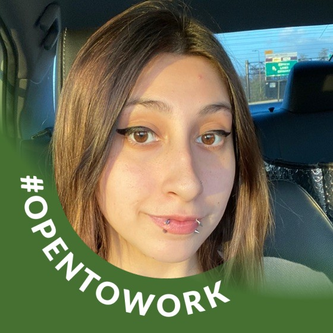
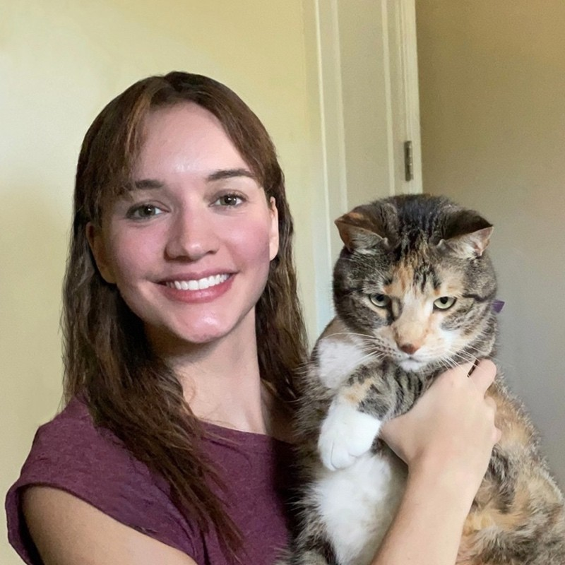
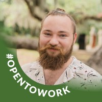

Our team is available for on site work in Orlando, Florida and remote work for all other locations
B Square is a software development studio with a mission to create polished and immersive experiences by bridging the gap between gaming and simulation. Our studio was started by Adrian Lannon and Austin Pinzon, New Years Day, 2020.
Our passion for gaming and game development was the catalyst that created A Square, and our love for the development community and wanting to grow with it called us towards our work with the local studios and clients of Orlando.
Our team is able to support all areas of development and is located in beautiful Orlando, FL.
We are able to support products locally or remotely, with expertise in managing production, communication, and development.
With a background in production and tech design, Adrian was pushed into the tech startup lifestyle following his failed junior-high basketball career. Outside his work, Adrian enjoys fishing, garage sales and thinking about going to the gym.
An avid gamer and deductionist, Austin's passion for gaming and art began at a very young age. If he isn't playing Monster Hunter, screaming into a Rockband mic, or nitpicking some game's UX, Austin is working on new ways to better the user experience and creating memorable games.
Derrick is a highly organized senior architect. He enjoys deep diving into stupidly hard problems and finding solutions. A gamer at heart, he can be found working out in VR and building holograms in his free time.
Dylan is an accomplished PM and coordinator. He takes great care in fulfilling clients needs and making sure his team is on task and on time. As an avid Warhammer aficionado when he's not working he is gearing up his troops for the next battle.
Kevin is your friendly neighborhood programmer and PM who is always looking to create new and exciting experiences for people to enjoy. Whether it is at work or at one of his infamous DND games, he always appreciates working with and getting to know talented minds and passionate hearts.
Chris is a friendly hermit that's passionate about all forms of gaming and design. If you're lucky to see him, you'd probably find him playing his Nintendo Switch, watching Anime, or just yelling at his Miami Heat in the comfort of his own home.
Jose is a passionate programmer that enjoys designing systems and features. He also enjoys painting with acrylics and his love for music led him to learn how to play guitar. In his free time, he improvises licks to backing tracks or jams with his friends.
In Joel's spare time he enjoys going to the gym, learning about filmography, and getting together with his friends to play sports and video games. He is a curious and creative person and likes to indulge in manga, fantasy, sci-fi, horror novels, and scientific academic studies during his down time.
Self-proclaimed Tactics RPG connoisseur, Josh is always finding new ways to solve challenging obstacles in development. When he's not working, Josh can be found jamming out to ska-punk, playing a variety of games, but ultimately always coming back to old-school RuneScape
So I can write whatever I want here and you will put it as my bio?
Michael is a passionate 3D artist who adores gaming and enjoys nothing more than seeing something he's worked on brought to life in real time. If he isn’t working on a personal side project, he is likely building/painting Gundam model kits or playing a game from his massive library he’ll never have time to play all of.
Cory is a full-time artist, part-time wizard, and USAF combat veteran. He likes long walks on the beach, the smell of fresh rain, and solving puzzles. He really dislikes zombie movies that do not utilize trench warfare. Cory also has a favorite song in almost every genre and firmly believes that birds are not real.
A diligent worker, Nadia focuses on achieving viable products practicing efficient methods to ensure deadlines are met. In her time off she tends to enjoy gacha games and listening to the Armored Core soundtrack on repeat. She's an avid pillow fort enthusiast and is unlikely to leave once its built.








